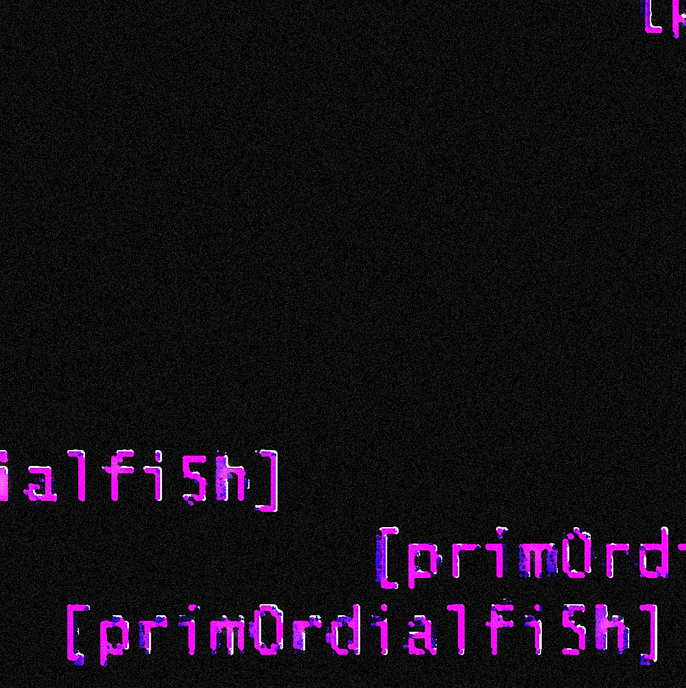

welcome to theprimordialconnection. view our new products for updated catalogue info. follow us on telegram for updated proxy links, .onion access, free party info, and more.
welcome to theprimordialconnection. view our new products for updated catalogue info. follow us on telegram for updated proxy links, .onion access, free party info, and more.
OUR SUPPORTERS:
